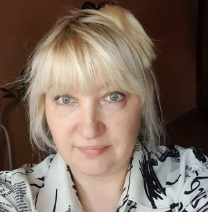

Павлова Диана Руслановна
Основная информация
- Дата рождения: 14.09.1969
- Пол: Женщина
- Гражданство: Российская Федерация
- Адрес проживания: Калининградская область, г. Калининград
- E-mail: diana50888@gmail.com
- Телефон: +7(996) 959-87-10
Опыт работы
Общий стаж - 17 лет 4 месяцев
- Ноябрь 2019 – ноябрь 2020.
- Продолжительность: 1 год.
- Должность: Продавец-консультант.
- Организация: Лотереи Москвы, Калининград.
- Обязанности: Полное обслуживание точки продаж: открытие, закрытие, склад, реклама, выдача выигрышей, ведение отчетности по продукции и кассе (1 С), прием и продвижение товара.
- Достижения: Каждый месяц с премией за хорошую работу.
- Июль 2019 – сентябрь 2019.
- Продолжительность: 3 месяца.
- Должность: Кассир.
- Организация: Клондайк, Калининград
- Обязанности: Открытие -закрытие кассы. Расчёт покупателей на кассе. Внимательное отношение к посетителям, первичное консультирование покупателей, оформление скидочных карт, помощь при обмене или возврате товара.
- Достижения: привлечение постоянных клиентов.
- Март 2019 – май 2019.
- Продолжительность: 3 месяца.
- Должность: Контролер склада.
- Организация: Кенгуру, Иваново.
- Обязанности: Контроль за работниками склада, контроль транспорта.
- Достижения: Не зафиксировано ни одного случая воровства.
- Апрель 2007 – июль 2007.
- Продолжительность: 4 месяца.
- Должность: Психолог.
- Организация: ОШО, Надым
- Обязанности: Психологическое сопровождение трудных подростков и их родителей.
- Достижения: Разрешение нескольких конфликтов, возвращение детей в школу при длительных прогулах.
- Июнь 2004 – март 2005.
- Продолжительность: 9 месяцев.
- Должность: Научный сотрудник.
- Организация: Дальневосточный геологический институт ДВО РАН, Южно-Сахалинск.
- Обязанности: Экологический мониторинг ДВ морей и прибрежной зоны.
- Достижения: Обработка данных по заливу Анива с публикацией атласа, как справочного пособия.
- Сентябрь 1988 – май 2003.
- Продолжительность: 14 лет 8 месяцев.
- Должность: Инженер.
- Организация: СахНИРО, Южно-Сахалинск.
- Обязанности: Сбор, обработка и анализ данных.
- Достижения: 32 научные работы.
Образование
- Вид: Высшее.
- Год окончания: 1996.
- Учебное заведение: Дальневосточный государственный университет, Владивосток.
- Факультет: ГФФ.
- Специальность: Океанология.
- Квалификация: Инженер-океанолог.
Дополнительное образование
- Вид: Курсы. Яндекс-практикум. HTML, CSS, Java Script: вводный модуль
- Год окончания: 2022.
Социальное положение
Не замужем. Детей до 18 лет нет.